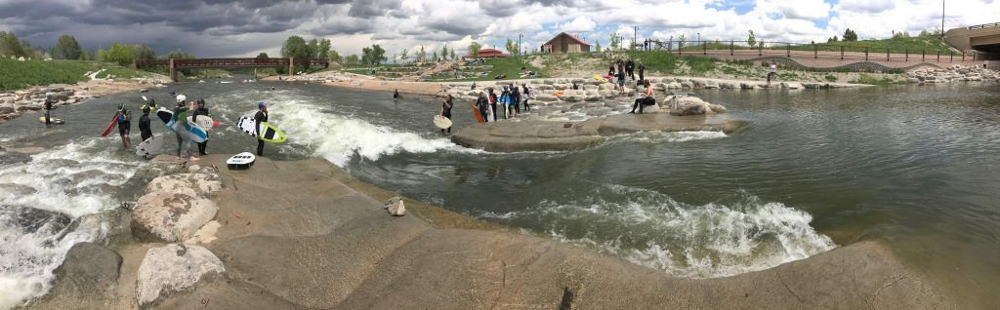

Project Spotlight: River Run Park
Restore, Recreate, Reconnect, Protect
River Run Park, located on the South Platte River in Sheridan, is an unique urban river park that brought new life to a half mile section of the river. The park provides recreation, connectivity to neighboring communities, and flood protection. On any given summer day, the park is full of people enjoying themselves — surfing the river wave, making use of the regional path, and just taking in all there is to see and experience at this location. This project includes:
Improved habitat throughout the river corridor, water quality, and fish passage

Enhancing recreation, both in the water and adjacent to the river

Improved appearance using natural river aesthetics

Replacement of two failed stability structures in the river

The project accomplished these goals and brought with it several other benefits including six whitewater wave features, world-class low flow surf wave, river access, a regional path, and a pavilion gathering area.
Get to River Run Park!
Urban Drainage and Flood Control District managed this project in partnership with:
- Arapahoe county
- Englewood
- Sheridan
- South Suburban Parks and Recreation District
- GOCO
- CWCB
- Trout Unlimited